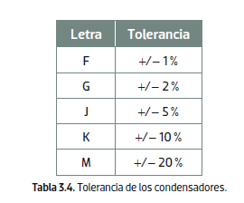

Condensadores (capacitores)
También denominados capacitores, son componentes pasivos que tienen la propiedad de almacenar energía. De esta forma, aprovechando su carga y su descarga, es posible utilizarlos en circuitos electrónicos para filtrar señales, acoplar circuitos, construir osciladores, etc.
Los condensadores están formados por dos láminas metálicas (armaduras), separadas por un elemento dieléctrico como puede ser el papel, el poliéster, un material cerámico, etc.

Las principales características eléctricas de los condensadores son su capacidad y su tensión de trabajo.
2.1. El valor de los condensadores
La capacidad del condensador se mide en faradios (F), no obstante, al ser una unidad muy grande, el valor de los condensadores siempre se da en submúltiplos del faradio como el microfaradio (μF), el nanofaradio (nF) y el picofaradio (pF). Dicho valor suele estar impreso en el mismo cuerpo de los condensadores, e igual que en las resistencias, puede estar codificado por un código de colores (casi en desuso) o por un código alfanumérico.
2.1.1. Identificación por código de colores
Se utilizan en condensadores con cinco bandas de colores. Las tres primeras se aplican de la misma forma que en las resistencias. Los dos primeros colores son los dos primeros dígitos, y el tercer color es el multiplicador. El valor de estos condensadores se obtiene en picofaradios (pF).

La cuarta banda de color corresponde a la tolerancia, y la quinta, y última, a la tensión de trabajo del condensador.
🎨 Calculadora Interactiva de Código de Colores (5 Bandas)
2.1.2. Identificación por código alfanumérico
En este caso, el valor del condensador, expresado en picofaradios, se muestra mediante tres cifras y una letra. Las dos primeras corresponden a las unidades y las decenas, el tercer número indica la cantidad de ceros que hay detrás de las dos primeras unidades, y la letra es la tolerancia. Véanse los siguientes ejemplos:
- ■ 473F = 47 000 pF +/– 1 %
- ■ 101K = 100 pF +/– 10 %
- ■ 224J = 220 000 pF +/– 5 %
- ■ 102M = 1 000 pF +/– 20 %
También existen otras formas de expresar el valor de la capacidad del condensador:
Ejemplo 1. En ocasiones no se expresan las unidades, simplemente se muestra un número decimal, cuyo valor viene dado en nanofaradios.
- ■ 0,047 = 47 nF ■ 0,68 = 68 nF
Ejemplo 2. Otras veces, el valor viene expresado mediante la letra k (de kilo). En este caso, k equivale a nF (nanofaradios).
- ■ 10 k = 10 nF ■ 22 k = 22 nF
Ejemplo 3. En otras ocasiones, la letra de las unidades se utiliza como separador de la parte entera y decimal.
- ■ μ1 = 100 nF ■ 4n7 = 4k7 = 4 700 pF

2.2. Tipos de condensadores
De igual forma que las resistencias, pueden tener valor fijo o variable. Así, los condensadores de valor fijo más utilizados son los que se enumeran a continuación:
De poliéster: no están polarizados y reciben su nombre por el tipo de material dieléctrico que se encuentra entre sus armaduras. Tienen forma plana o cilíndrica y su valor de capacidad suele ser inferior a 1 μF, aunque en aplicaciones especiales, como en los filtros de altavoces, etc., se pueden encontrar de mayor valor.